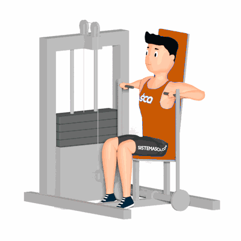

Supino Vertical na Máquina

Exercício para fortalecimento e hipertrofia da região peitoral, com enfoque aos músculos peitoral maior e menor. Realize no aparelho com auxílio de roldanas. Indicado a praticante de musculação nível iniciante e intermediário.
Ficha Técnica
Tipo: Musculação
Grupo Muscular: Peito
Aparelho: Nenhum
Músculos: Nenhum
Como realizar
- Deite sobre o aparelho, costas apoiadas;
- Agarre os pegadores do aparelho com os cotovelos flexionados;
- Com a força dos peitorais, empurre para frente até que os braços estejam estendidos;
- Concentre toda a força nos músculos peitorais, retorne à posição inicial de forma controlada flexionando os cotovelos;
- Repita os movimentos, conforme o número de repetição orientado pelo professor.
 RC STORE
RC STORE